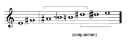
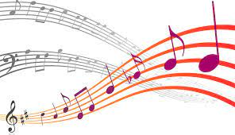

Elementos De La Musica

La música contiene dos elementos: el material acústico y la idea intelectual. Ambos no se hallan yuxtapuestos como forma y
contenido, sino que se combinan, en la música, para formar una imagen unitaria. Para convertirse en vehículo de la idea
intelectual, el material acústico experimenta una preparación pre-musical, mediante un proceso de selección y ordenamiento.
La estructura del sonido, la escala de sonidos armónicos, exhibe ya un ordenamiento que la predestina para ser el vehículo de la
intención intelectual. Con el fin de un entendimiento general previo, dentro del material acústico para la organización de la
música, encontramos diversas clasificaciones, dentro de las cuales la más habitual en ambientes académicos es la que divide la
música en melodía, armonía y ritmo. La manera en la que se definen y aplican estos principios, varían de una cultura a otra
(también hay variaciones temporales).
-
La melodía es un conjunto de sonidos —concebidos dentro de un ámbito sonoro particular— que suenan sucesivamente uno después
de otro (concepción horizontal), y que se percibe con identidad y sentido propio. Los silencios también forman parte de la
estructura de la melodía, poniendo pausas al «discurso melódico». El resultado es como una frase bien construida semántica y
gramaticalmente. Es discutible —en este sentido— si una secuencia dodecafónica podría ser considerada una melodía o no.
Cuando hay dos o más melodías simultáneas se denomina contrapunto.
-
La armonía, bajo una concepción vertical de la sonoridad, y cuya unidad básica es el acorde o tríada, regula la concordancia
entre sonidos que suenan simultáneamente y su enlace con sonidos vecinos.
-
El ritmo, es el resultado final de los elementos anteriores, a veces con variaciones muy notorias, pero en una muy general
apreciación se trata de la capacidad de generar contraste en la música, esto es provocado por las diferentes dinámicas,
timbres, texturas y sonidos. En la práctica se refiere a la acentuación del sonido y la distancia temporal que hay entre el
comienzo y el fin del mismo o, dicho de otra manera, su duración.
-
La articulación, refiere a cómo un sonido es ejecutado, así como la transición entre dos (o más) notas. Entre las variadas
formas de articulación elaboradas a lo largo de la historia, destacan principalmente el legato, el staccato, el portato, el
tenuto, el acento, el marcato y el calderón.
